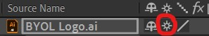

Adobe After Effects
Getting Started
New Project > New Composition
- Preset:
HDTV 1080 25 - Resolution:
Full - Duration: Guess or use
0:00:10:00
The other way to create a composition specially if it's to a set track of music.
- Drag music to the Project window
- Right Click >
New Comp from Selection
Pre-Compose
This is grouping different layers together where it creates it's own mini composition.
- Select all the layers you want to group
- Right click > Pre-Compose
Techniques
Interfaces
Sounds that go with icons or transitions are called Interfaces.
Offset
This is where you have an overlapped icon and using the overshoot expression looks like the come in after each other. Check out video 19.
Sequence Layers
To automatically stagger layers, make sure playhead is either at beginning or where you want it to start
1. Select all layers you want to stagger. Select the first one first.
2. Animation > Keyframe Assistant > Sequence Layers
3. Select Overlap
4. Select how much of an overlap. (This starts backwards. ex: 04:20)
Vector Redraw
Vector Redraw is when your vector image is redrawn everytime it scales or transforms. By default this is off as it's CPU intensive. To turn it on press the star simple on the layer.

Masks
Masks use Alpha Channel to create transparency or mask another layer. For example if you wanted part of an image the same dimensions or shape of a solid you can mask it on top.
Need to write up steps but see Lectures 36 & 37.
Opacity
Usually you set Opacity as a percentage within the layer. You can gain better type of opacity by changing the mode (Toggle switches) to something like Multiply. There's loads so just go throw and find what works.
Animation
Motion Blur
- Turn on master motion blur first by pressing the triple circle icon in your timeline.
- Enable the layer by pressing the triple circle square to the right of the layer.
Experssions
Expressions are code snippets that are applied to a layer to carry out a function.
1. To apply an expression alt + press layer attribute.
2. It will go red and a box will appear.
3. Delete current text and paste in your code snippet.
See video 16: Animation Tip - Overshoot
Overshoot Script
1 2 3 4 5 6 7 8 9 10 11 12 13 14 15 16 | |
Camera (1 Node)
Camera is used to zoom in and out and pan the canvas.
Trim Path
From After Effects
This is how you animate drawings.
- Expand layer
- Contents
- Add
- Trim Paths 1
- Adjust the Start keyframes depending on if you want to reveal the line.
- Add easing (Keyframe velocity)
Import from Illustrator
Animate drawing from Illustrator
1. Import .ai file into the composition
2. Create > Create Shape from Vector Layer
3. Remove the .ai file from timeline (you can also remove it from the project)
Null Object
Null Objects are from group layers so they share the same action or attribute.
1. Right-Click Timeline
2. New > Null Object
3. Under Parent & Link select any layer you want to attach to the null object
4. Adjust Null Object
Graphs
You can either make them in After Effects which probably looks better but is really hard or use Illustrator's Graph tool and import the data from Excel.
In Illustrator:
- Select the graph tool & type of graph.
- Drag size on canvas
- Copy table data from Excel & paste into mini spreadsheet.
- Ungroup the table. Object > Ungroup > Yes
- Make any colour or font ajustments.
- Open up the layer and you'll have to drill down into layer one but basically we need to seperate any object that will animate and put it in it's own layer (That you'll need to create.)
- Save
In After Effect:
1. Import .ai file
2. Import Kind: Composition
3. Footage Dimensions: Layer Size
4. Open up the new composition
5. Adjust anchor point y and drag whilst pressing shift to snap and straight.
6. On each layer set break scale axis (little infinity symbol) and start keyframe at 0% and then add another keyframe as 100%
7. Optional: Add overshoot expression
8. Highlight all keyframes and set slider at beginnging and Ctrl+C & Ctrol+V on each layer.
9. You cam manually stagger the keyframes or do this automatically by Sequence Layers
Track Motion
Window > Tracker > (select layer) > Track Motion
Manual Motion Tracking
If you can't use camera tracking you can do it frame by frame yourself. (It's not as bad as it sounds when you use shortcuts.)
- Draw line (press at one point and then the next to what you want to track)
- On the layers: Layer > Contents > Shape 1> Path 1 > Start keyframe
- With Path 1 selected and pen tool enabled click on the point you want to move
- Using
Ctrl + Left Arrow Keyto move to the next frame. Shift + Arrow keyto move the point to its new destination- Repeat Steps 4 & 5
Video
Extend Video
To freeze the last frame of a video
1. Right-Click on timeline
2. Time > Freeze On Last Frame
Export
- Make sure composition is selected
- Composition > Add to Media Encoder Queue.
Export to Powerpoint
- Export to low res. Ex: Target Bitrate: 2, Max Bitrate: 5.
- Ratio Width: 1280, Height: 720
When you export the video it will start on the Powerpoint slide as blank so you need generate a poster image.
- Move cursor to where animation is fully revealed.
- Compsition > Save Frame As > File > Choose Destination
- At the bottom on the screen click render.
- In PowerPoint insert the video and whilst selected goto Video Format > Poster Frame > From File > Insert image (You might have to convert it to jpg or png)
Export to GIF
Shortcuts
u On selected Source Name this will only show attributes that are being used.
F9 On selected keyframe applies Easy Ease
A,P,S,R,T On a layer is a shortcut for the layers parameters Action, Position, Scale, Rotation, Opacity.